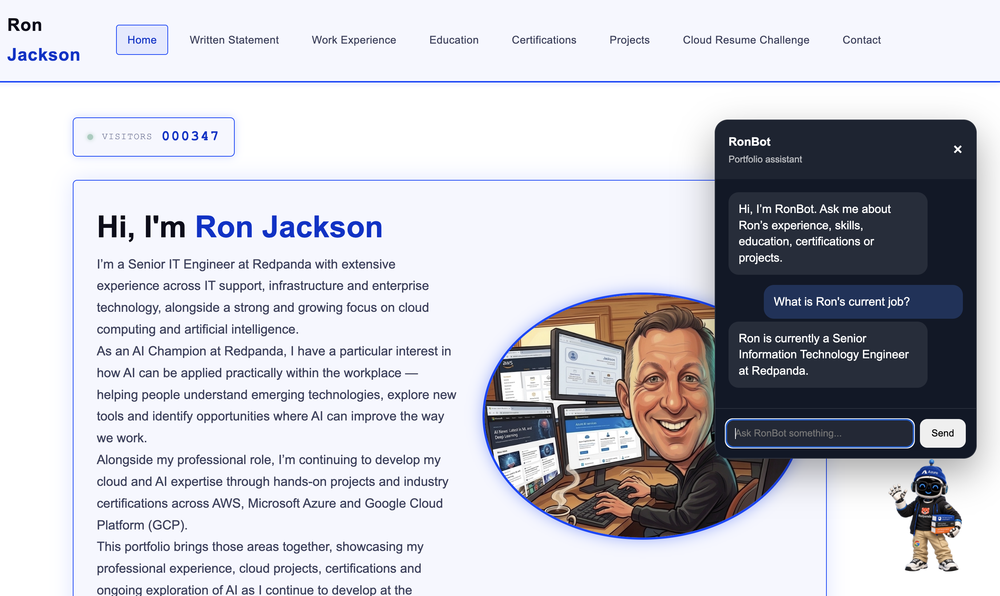

Visitor
A visitor asks a question from any page of the portfolio.
An AI-powered interactive portfolio assistant that helps visitors explore Ron's work experience, skills, certifications, education and projects using only information published on this website. RonBot is designed to stay grounded, avoid guessing and direct unanswered enquiries to the Contact page.
RonBot at a glance
RonBot gives visitors a natural way to explore Ron’s published experience, skills, certifications, education and projects. It is designed to be useful without pretending to know more than the portfolio can support.
Questions are answered from approved website content only. When the evidence is missing, ambiguous or private, RonBot gives a clear, safe response and directs visitors to the Contact page instead of guessing.

Architecture
RonBot separates the visitor experience, API boundary, retrieval logic and AI response generation. That keeps the experience fast and conversational while ensuring the model receives only relevant, approved portfolio evidence.
A visitor asks a question from any page of the portfolio.
The browser sends the question and limited conversation context to the API.
The public HTTP boundary applies CORS and route-level rate protection.
Python validates the request, applies guardrails and retrieves relevant website evidence.
Amazon Nova Micro produces a natural answer from the supplied evidence only.
Approved portfolio pages are processed by a Python ingestion pipeline into a structured JSONL knowledge set. Retrieval selects relevant chunks before any evidence is supplied to the AI model.
Technology stack
The implementation uses managed AWS services where they remove operational overhead, while keeping the core retrieval and safety logic transparent and testable in Python.
A lightweight static portfolio and site-wide RonBot widget, designed for responsive, accessible interaction.
Static hosting and global HTTPS delivery for the portfolio and browser assets.
A focused HTTP endpoint for questions, with CORS and route-level rate protection.
Request validation, guardrails, retrieval, safe fallback behaviour and structured operational logging.
Amazon Nova Micro turns selected portfolio evidence into a concise natural-language response.
A repeatable website-only ingestion pipeline and a traceable local knowledge set for retrieval.
Engineering challenges
The project evolved through practical issues that are common in real AI-enabled services: keeping source data current, preventing unsupported answers and refining a browser experience without weakening accessibility.
Portfolio content is the source of truth, but Lambda uses a packaged knowledge snapshot. A repeatable ingestion process and deployment check were introduced so changes to the public site can be reflected safely in RonBot.
Natural language models can make answers sound convincing even when evidence is incomplete. Retrieval scoring, evidence-only prompting, deterministic safeguards and a clear Contact fallback keep the assistant within the published record.
The widget was refined into a site-wide experience with idle, greeting and thinking feedback, keyboard-friendly controls and reduced-motion support — without distracting from the portfolio itself.
Safety and controls
RonBot’s useful behaviour is deliberately bounded. The project treats accuracy, privacy and predictable failure handling as product features — not an afterthought once the chat interface works.
Responses are based on relevant chunks from the approved portfolio knowledge set. RonBot is instructed not to infer missing facts or combine details across unrelated roles.
Private, sensitive and inappropriate requests are identified early and receive a consistent safe response instead of a speculative answer.
The API validates request shape and size, limits conversation history, and treats visitor input and chat history as untrusted data.
Unsupported questions route visitors to the Contact page. Structured Lambda logging, rate protection and cost monitoring support the production service.
Testing and outcomes
RonBot was tested as a complete service, not only as a local Python script. Each release was checked proportionately across automated tests, the public API and the live portfolio.
Regression coverage for validation, security, privacy, question handling and grounding contracts.
Local behaviour, the deployed API and the live browser widget were validated for supported and deliberately unsupported questions.
From the requirements boundary through production QA and site-wide experience refinement.
Project Delivery Board
Release the completed RonBot v1 experience on the live portfolio, complete final end-to-end production validation and invite external users to test real-world conversations, identify unexpected behaviours and provide feedback before final project sign-off.
Complete the production repository documentation with final architecture, deployment guidance, security and privacy controls, screenshots, operating costs and the completed RonBot v1 implementation.
Complete final documentation, cost and portfolio reviews before marking Project 02 complete.
No active work item. RON-23 RonBot v1 Production Release & External User Testing is next.
Defined RonBot as a website-only assistant: no external searches about Ron, no unsupported guessing, and unanswered enquiries are directed to the Contact page.
Defined and documented the frontend, API, AI and website-knowledge architecture using low-cost serverless AWS services.
Defined RonBot's friendly, professional and recruiter-ready voice, adaptive technical depth, website-only grounding and Contact fallback behaviour.
Created and approved the production RonBot character artwork with AWS hoodie, Redpanda T-shirt, Azure beanie, Google-branded trousers and study material.
Built the local RonBot chat interface and connected the initial browser experience, establishing the frontend foundation for asking questions and displaying responses.
Added the animated floating RonBot launcher and interaction behaviour, including hover feedback, open/close transitions, message presentation and reduced-motion accessibility support.
Built and validated the Python website ingestion pipeline, converting approved portfolio content into clean, structured and traceable JSONL knowledge chunks for RonBot.
Built the local Python retrieval and scoring layer, including tokenisation, stop words, query expansion and relevance scoring to select grounded website knowledge for a user's question.
Improved natural-language retrieval and conversational answers while preserving the website-only knowledge boundary and Contact-page fallback. Validated with an 11 / 11 regression test covering supported and deliberately unsupported questions.
Added adaptive answer depth so general visitors receive concise portfolio answers while technical questions can surface deeper website-grounded implementation detail. Improved retrieval for RonBot implementation questions while preserving website-only grounding and the Contact-page fallback for unsupported questions.
Deployed the RonBot backend to AWS Lambda, exposed it through an Amazon API Gateway HTTP API using POST /ask, connected the browser frontend to the live endpoint, configured CORS for local and production origins, and validated grounded answers, fallback behaviour and frontend error handling.
Hardened the AWS-hosted RonBot backend with structured Lambda logging, request IDs, duration tracking, safe 400/500 error handling, configurable log levels, CloudWatch observability, least-privilege IAM review and live API regression testing.
Integrated Amazon Nova Micro through Amazon Bedrock into the production RonBot backend, using retrieved website evidence to generate grounded AI responses while preserving website-only knowledge boundaries, deterministic safeguards and the Contact-page fallback. Deployed the integration to AWS Lambda with least-privilege Bedrock permissions and validated the end-to-end production response path.
Support natural follow-up questions while preventing chat history from overriding grounding rules.
Added request and payload validation, bounded conversation limits, API Gateway rate controls, prompt-injection safeguards and clear rate-limit feedback in the browser. Verified through local tests, Lambda deployment, public API validation and live-site testing.
Prevent external personal-data retrieval and define safe behaviour for personal or inappropriate questions.
Established an AWS cost baseline, safely retired legacy EC2 and EBS resources after recovery snapshots, and configured budget and anomaly alerts for ongoing monitoring.
Created repeatable test cases for core visitor journeys, safe fallbacks, privacy, conversation context and request validation. Added seven automated regression tests and validated the local backend, public API and live website.
Defined explicit evidence rules and verified, through automated checks, the public API and the live website, that RonBot stays grounded, avoids cross-role fact mixing, ignores false conversation history and protects private information.
Completed final local, public API, live widget and AWS operational validation. The 26-test backend suite, route throttling, Lambda health, budget and anomaly-monitoring checks all passed.
Made RonBot available across the portfolio, added subtle idle, greeting and thinking motion with reduced-motion support, refreshed the website-only knowledge base, and improved broad work-history answers across the full published career timeline.
Expanded Project 02 into a technical RonBot case study with architecture, stack, live conversation evidence, engineering challenges, safety controls, testing and outcomes.
Current Project Status